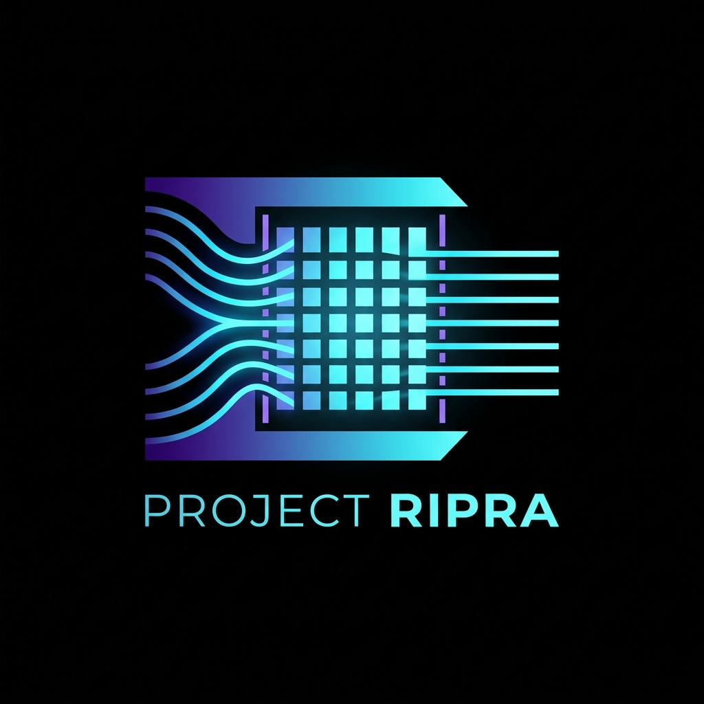

RIPRA (ऋप्र)
Real-Time Wavefront Reconstruction & Turbulence Characterization
PxA Labs
↓ Press Next
Problem
- Atmospheric turbulence distorts optical wavefronts on 1–10 ms timescales
- Adaptive Optics must sense and correct within this budget or image quality degrades
- Shack-Hartmann WFS samples wavefront via microlens array spot field
- Challenge: compute spot centroids, reconstruct wavefront, map to DM in <10 ms
Solution Architecture
- Layer 1: C library (centroid, reconstruction, DM mapping) — 0.9 ms pipeline
- Layer 2: CUDA + PyTorch ML (CNN, LSTM, MLP) — GPU-accelerated
- Layer 3: Visualization dashboard (matplotlib, self-contained HTML)
Camera (648x492) → TCoG Centroiding → Zonal/Modal Recon → DM Map → Display
Centroiding: Merged Single-Pass TCoG
- Thresholded Center of Gravity with merged minmax + CoG in one pass
- Fast path: 0.805 ms (1.5x speedup over naive loop)
- Iterative refined: 1.18 ms (higher accuracy)
- Stability: σ < 0.00005λ on static frames
Reconstruction Methods
Zonal (Fried)
Phase nodes at lenslet grid corners. Geometry matrix G truncated SVD. Direct integration.
Modal (Zernike)
Derivative matrix Z' via 15x15 quadrature. Pseudo-inverse. 20 modes (j=2..21).
DM Actuator Mapping
- Solves v = M⁻¹W for actuator commands from phase
- M incorporates inter-actuator mechanical coupling (γ)
- Pseudo-inverse pre-computed — single matrix-vector multiply at runtime
- Additional 0.05 ms per frame
ML Models
| Model | Parameters | Test MSE | Latency |
|---|
| MLP (2-layer FC) | 35K | 0.752 | 0.67 ms |
| CNN (ResNet) | 206K | 0.0106 | 2.26 ms |
| LSTM (predict) | 211K | RMSE 1.72 | 0.62 ms |
CNN maps irregular sub-apertures to 12x12 dense grid via interpolation
Results: Latency
| Method | Mean | σ | P95 | Memory |
|---|
| Modal Classical | 0.041 ms | 0.012 | 0.059 | 0.08 MB |
| MLP | 0.666 ms | 0.332 | 1.386 | 1.14 MB |
| CNN | 2.257 ms | 1.159 | 3.587 | 0.79 MB |
500 iterations, CPU for classical, CUDA for ML (RTX 2050)
Results: Pipeline Latency
| Stage | Time |
|---|
| Fast centroid (merged TCoG) | 0.805 ms |
| Reconstruction (zonal + modal) | 0.05 ms |
| DM mapping | 0.05 ms |
| Total pipeline | ~0.9 ms |
| Theoretical throughput | ~1100 fps |
Well under 10 ms AO budget and 500 fps requirement
Results: Noise Robustness
| Condition | Modal | MLP | CNN |
|---|
| Gaussian σ=3.16 px | 0.011 | 0.706 | 0.107 |
| Photon γ=0.01 | 0.328 | 0.865 | 0.611 |
| Occlusion 50% | 1.284 | 1.062 | 1.234 |
200 test frames, RMSE in radians. CNN robust to readout noise.
Turbulence Characterization
- r₀ (Fried parameter): from slope variance (0.17·λ²d⁻¹⁄³/σ²)³⁄⁵
- τ₀ (Coherence time): 1/e decay of auto-correlation
- LSTM-based regime classification: 99.64% accuracy
- D/r₀ estimation: R² = 0.693
Deployment
- C API: rippra_api.h / rippra_api.c → rippra.dll (via build_dll.bat)
- Python bindings: ctypes wrapping all 10 API functions
- ONNX models: MLP (1.17 MB), CNN (0.81 MB), LSTM (0.83 MB)
- Docker: CUDA 12.8 / Ubuntu 22.04 build container
Visualization Dashboard
Self-contained HTML pipeline dashboard with three nodes:
- SH-WFS Input: Animated 8x8 donut spot field
- Processing Pipeline: Algorithm list + performance specs
- Reconstructed Wavefront: Matplotlib-animated 3D surface (RdBu_r, circular pupil)
Plus Zernike bar chart, time series, turbulence telemetry, 6-panel performance monitor
Conclusion
- Complete SH-WFS processing pipeline: <0.9 ms end-to-end
- Classical modal: 0.041 ms, CNN: 2.26 ms, both <10 ms budget
- GPU ML: CNN 26,866 fps (7.0x vs CPU)
- LSTM predictive AO with 99.64% regime classification
- ONNX-exported models + Python bindings + Docker deployment
- Self-contained HTML monitoring dashboards
github.com/PxA-Labs/Project-RIPRA
1 / 14